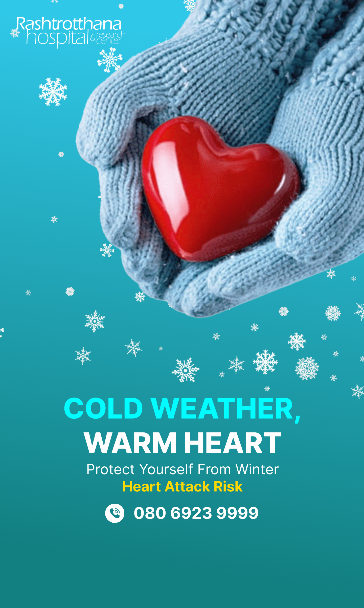
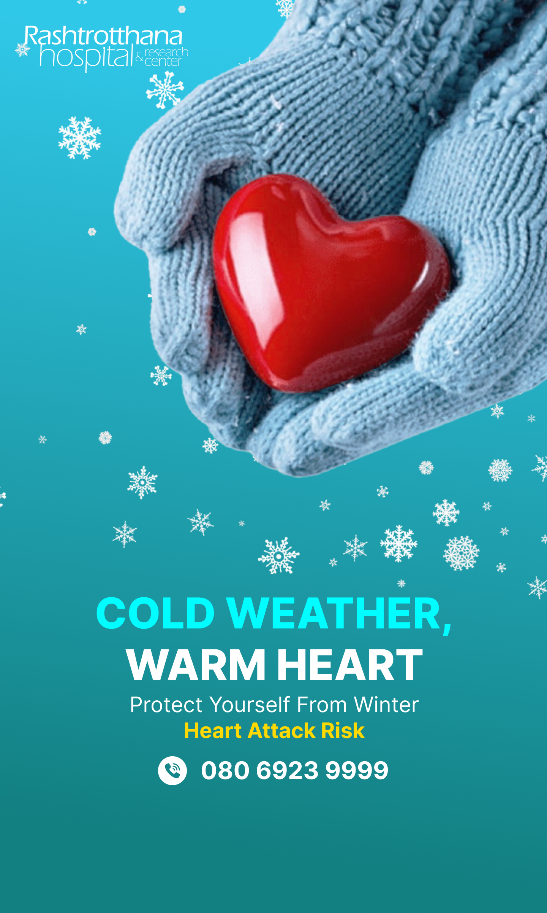

Winter Heart Health – When the Season Turns Cold, Let Your Care Stay Warm
Winter brings relief in many ways, but for the heart, it can become an unexpectedly demanding season. As temperatures drop, medical records consistently show a rise in heart attacks, sudden cardiac arrest, BP spikes, and breathlessness. Even those who usually feel strong and healthy may notice subtle changes-slower stamina, heavier breathing, or a quiet pressure in the chest that wasn't there before. These small shifts can feel easy to brush aside, yet they are often the heart's first whisper that it is struggling.
If you begin sensing these changes, please don't ignore them. A timely visit to our experienced cardiology team can offer clarity, reassurance, and the care your heart needs to stay protected through the winter months. Your wellbeing matters, and early action can make all the difference.
Why Heart Problems Increase in Winter?
Cold weather narrows blood vessels, making the heart work harder → can trigger chest pain, BP spikes, and heart attacks.
Constricted Blood Vessels:
Cold weather narrows blood vessels, making the heart work harder and can trigger chest pain, BP spikes, and heart attacks.
Elevated Blood Pressure:
Blood pressure naturally rises in winter, increasing strain-especially for those with hypertension.
Reduced Oxygen Levels:
Cold air has lower oxygen, causing breathlessness, chest tightness, and fatigue.
Increased Blood Thickness:
Winter increases blood thickness, raising the risk of clots and stroke.
Lifestyle Changes:
People become less active and eat heavier foods, adding extra load on the heart.
Heart Conditions That Worsen During Winter
Coronary Artery Disease
Narrowed arteries struggle more in cold; chest heaviness becomes noticeable.
High Blood Pressure
Winter makes BP harder to control, raising heart attack and stroke risk.
Heart Failure
Breathlessness and swelling often worsen in cold mornings.
Arrhythmias
Sudden cold exposure can trigger irregular heartbeats or palpitations.
Angina
Chest tightness increases when walking or exerting in cold air.
Respiratory Issues
Winter cough, asthma, or infections put extra pressure on the heart.
Common Symptoms People Experience in Winter
These symptoms often start subtly and worsen as temperatures fall:
✓ Pressure, heaviness, or tightness in the chest
✓ Breathlessness during cold mornings or evenings
✓ Sudden fatigue or low energy levels
✓ Palpitations or fluttering heartbeat
✓ Pain radiating to the back, jaw, or left arm
✓ Light-headedness or near-fainting episodes
✓ Unusual sweating in cold weather
✓ Difficulty climbing stairs
✓ High BP readings despite medication
✓ Swelling in feet or ankles (fluid retention)
Important: Even if these symptoms appear mild or infrequent, they may indicate early cardiac strain triggered by winter.
Who Is Most at Risk During Winter?
Cold weather places extra strain on the heart, and certain individuals are more vulnerable during this season. Winter-related cardiac risks are higher for:
Individuals above the age of 35
People with high blood pressure or diabetes
Those with thyroid disorders
Individuals with obesity
Patients with asthma, COPD, or chronic cough
Smokers and regular alcohol consumers
People with a family history of heart disease
Individuals recovering from COVID-related lung complications
If you belong to any of these groups, winter calls for proactive cardiac evaluation rather than waiting for symptoms to worsen.
Winter Heart Health Evaluation – Why Early Diagnosis Matters?
Many winter-related cardiac emergencies occur because early warning signs go unnoticed. A timely heart evaluation can identify hidden issues such as early coronary blockages, heart muscle weakness, rhythm disturbances, blood pressure instability, fluid overload, and lung–heart interaction problems.
This assessment typically includes ECG, 2D Echo, BP and oxygen monitoring, and specialist consultation, with further tests advised when needed. Early diagnosis allows faster treatment, lowers complication risk, and helps you stay safe through the winter months.
Advanced Cardiac Care at Rashtrotthana Hospital
Our Cardiology team provides a strong combination of clinical expertise, advanced diagnostics, and personalised treatment designed for winter-related cardiac issues.
Why patients choose us:
Experienced cardiology & emergency care specialists
Immediate response for chest pain and breathlessness
24/7 cardiac monitoring & emergency unit
State-of-the-art diagnostic systems
Evidence-based treatment protocols
Affordable seasonal check-up packages
Dr. Suhas Raj S, Consultant Cardiologist, provides expert care for winter-related heart strain, chest discomfort, blood pressure fluctuations, and rhythm disturbances. Working alongside Dr. Vinod Kolla (Consultant – Pulmonology & Sleep Medicine), the team addresses winter-triggered respiratory stress that often places added pressure on the heart-especially in patients with chronic cough, COPD, asthma, or recurrent seasonal infections.
Our Cardiology Experts
Your Health, Our Priority
Winter often speaks softly, and so does the heart. A heavier breath, a quiet tightness, a tiredness you can't explain-these are small signs worth listening to. If something feels different, trust that feeling. Schedule a consultation with our cardiology team to understand what your heart needs and receive the care it deserves this winter. We are here to guide you gently and help you move through the season with reassurance and peace.
 
